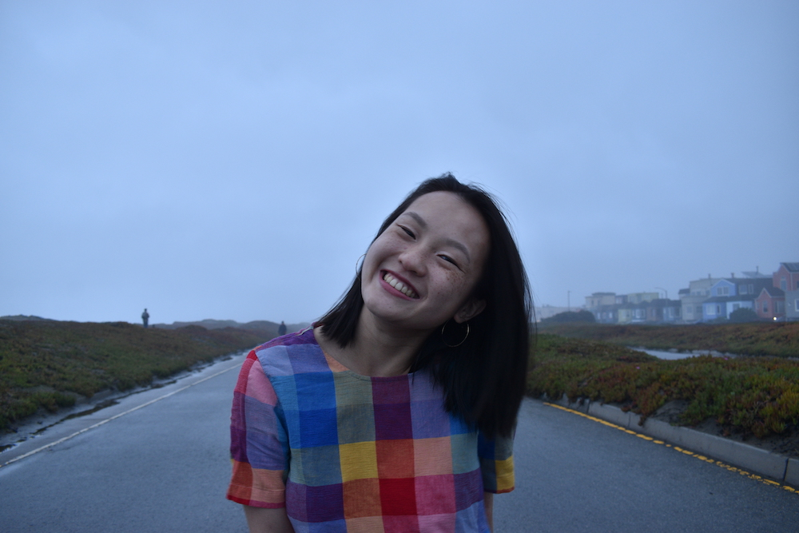

hello, 你好, what's up! i'm jess eng
i'm currently the food and features intern for the washington post. in a previous life, i was a data wrangler, elections nerd, and maps enthusiast at places like npr and the washington post. but more recently, i realized that writing, cooking, and dreaming about food makes my heart skip and twirl like no other job i've held (trust me i've tried -- teacher, curriculum designer, disinformation reporter, non-profit worker, the list goes on). and like no other job, food writing has stuck. if you're curious, you can find my food and data writing in the washington post, kqed and atlas obscura.
i'm a third generation chinese american who calls san francisco home. my interests wax and wane but *currently* i love modern dance, anything by lorrie moore and tony tulathimutte, the broken social scene, the golden state warriors, ancient food, and discovering new cookbooks.
an old picture of me (2019), but this will do. let's be friends!
